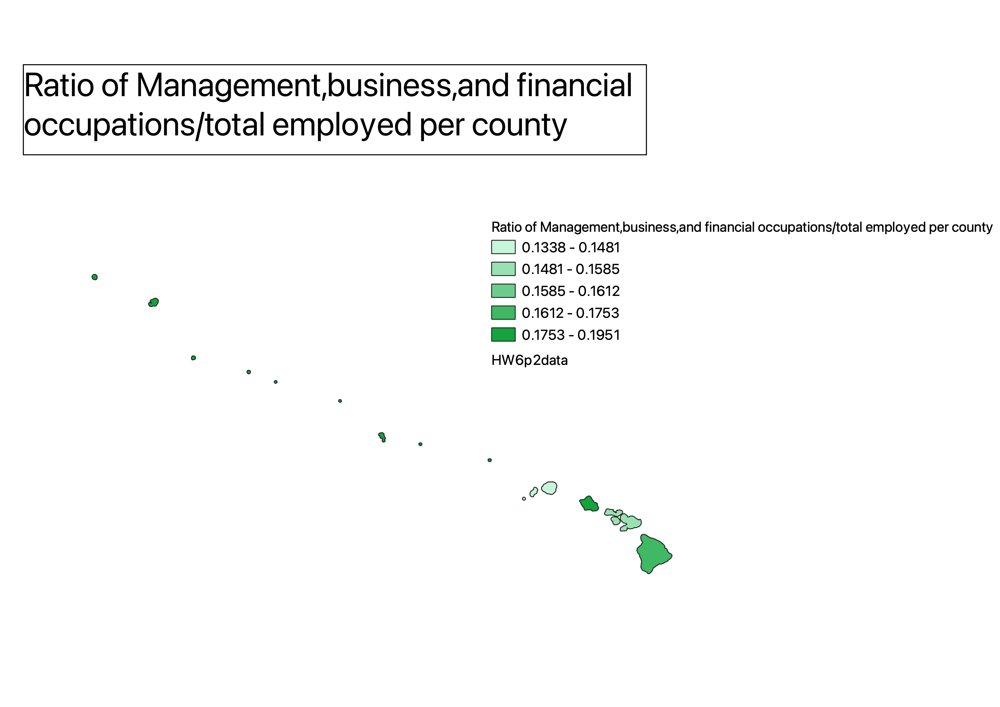
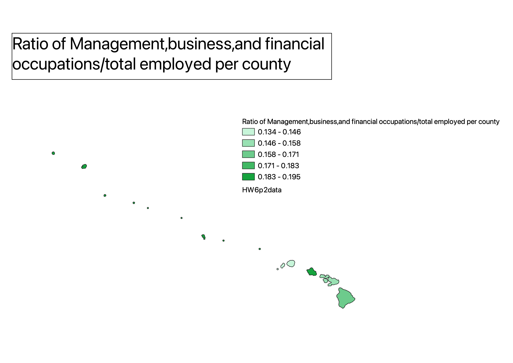
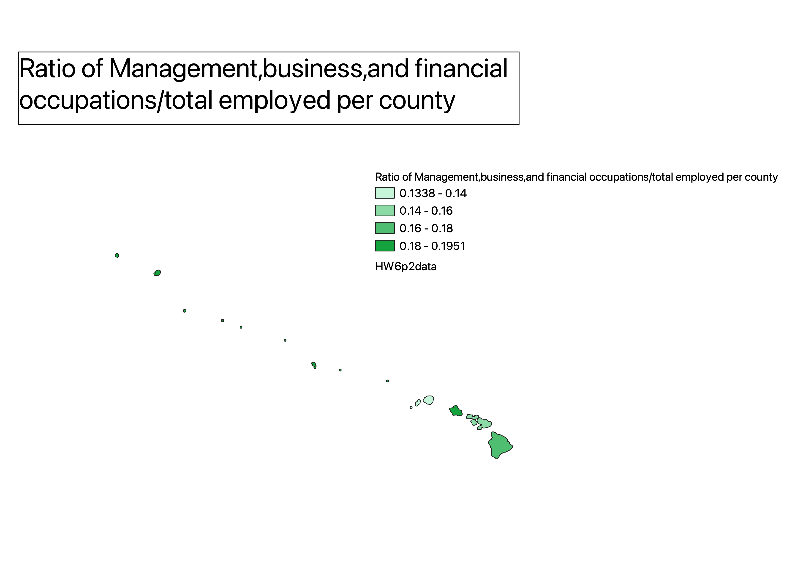

Homework 6 part 2:Ratios and classifications
Matteo Santillo
This map used the classification mode, equal count. Due to the fact that each class contains the same number of observations, this classification mode may be simple to comprehend and analyze. For some types of data however, equal count classification might not be appropriate. Classes that are created may have a large range of values and may not accurately reflect substantial differences in the data.

This map used the classification mode, equal interval. This mode of classification is useful for this data in that it provides an even distribution of values. However, in the case of outliers, the mode might not create relevant breaks.

This map used the classification mode, pretty breaks. This mode of classification makes the data relatiely easy to understand and visually appealing. However a con to this mode is that it's not ideal for skewed data as the ranges of the interval might be too large. However, in this case, given the smaller amount of data, the pretty breaks are quite pretty.

Data used for this project
CSV dataset
Link to shapefile